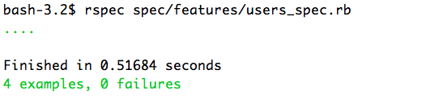

1 Example App
This guide comes with an example app, you can find the source on github: rails-example-security. This app is full of security holes. While reading this guide you should work on the app and fix those holes one by one.
2 Don't display confidential data
Rails offers a lot of security features. But all those clever features cannot save you from yourself. In the example app all the passwords are displayed on "/users". No framework can prevent that!

Let's use this as an example of how to fix a security problem
once you've found it: First we write a test for the problem: spec/features/user_spec.rb
describe "Users", :type => :feature do
describe "are listed publicly" do
it "shows name and e-mail" do
u = User.create!({ :name => 'noob',
:email => 'foo@bar.com',
:password => 'secret'})
visit "/users"
page.body.should have_text('noob')
page.body.should have_text('foo@bar.com')
end
it "does not show password" do
u = User.create!({ :name => 'noob',
:email => 'foo@bar.com',
:password => 'secret'})
visit "/users"
page.body.should_not have_text('secret')
end
# ....
end
end
When we run this test it fails, because right now passwords are displayed:

Now we change the view to not display the passwords any more. Running the test again we get success:
